Our History
Over 116 years of faith, community, and service in Toronto
The Sts. Cyril and Methody Macedono-Bulgarian Eastern Orthodox Cathedral in Toronto stands as a testament to the faith and perseverance of the Macedono-Bulgarian immigrant community. Established in 1910, the cathedral has served as a spiritual home, cultural anchor, and community centre for generations of Bulgarians and Macedonians in Canada. It is one of the oldest and most enduring Bulgarian Orthodox institutions in North America.
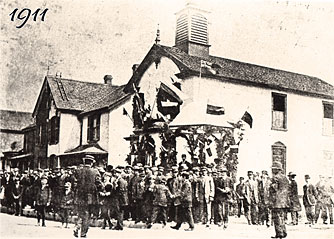
1911
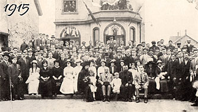
1915
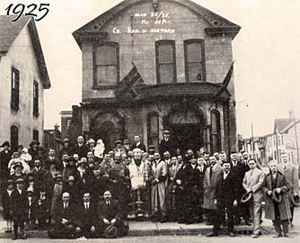
1925
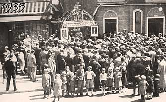
1935
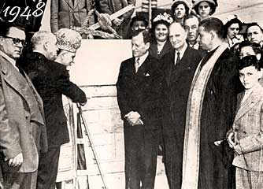
1948
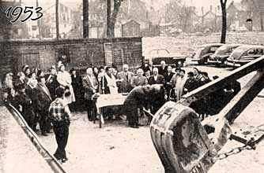
1953
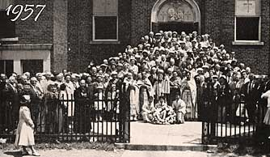
1957
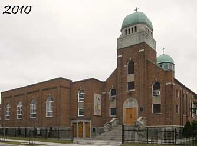
2010
Historical Timeline
August – October 1910
Foundation Campaign — 1,094 Immigrants
A campaign was launched by 1,094 Macedono-Bulgarian immigrants to establish an Orthodox church in Toronto. The community, newly arrived in Canada seeking a better life, was determined to preserve their religious traditions, Bulgarian language, and cultural heritage in the New World. The campaign demonstrated extraordinary community solidarity and fundraising effort.
November 24, 1910
First Church Building Purchased — $5,000
The building at the corner of Trinity Street and Eastern Avenue is purchased for $5,000. The lower floor is converted into a church; the upper floor is used for meetings and school lessons. Membership dues: $3 per year. This marked the official establishment of the cathedral's physical presence in Toronto.
May 24, 1911
Church Consecrated by Metropolitan Platon
The church was consecrated by Russian Metropolitan Platon on May 24, 1911 — coincidentally on the feast day of Sts. Cyril and Methody. This providential date would later give the cathedral its permanent name. The ceremony was attended by hundreds of community members and marked a spiritual milestone for the Macedono-Bulgarian community in Canada. Archimandrite Theophilact served as the first priest.
1914
"Prosveta" Society & First Bulgarian School
The "Prosveta" (Enlightenment/Education) society was established, with Kozo Temelkov as the first teacher. This Bulgarian school for children began the cathedral's educational mission that continues to this day. The school taught Bulgarian language, culture, and Orthodox religious knowledge — ensuring that the second generation of immigrants would remain connected to their heritage.
1916 – 1917
"Balkanski Yunak" Society — Adult Bulgarian School
The "Balkanski Yunak" (Balkan Hero) society opened a Bulgarian school for adults, serving the educational needs of the growing immigrant community. This initiative recognized that many adult immigrants also wished to improve their literacy in Bulgarian and maintain cultural connections. The society hosted various cultural and social events alongside its educational programs.
March 11, 1918
Archimandrite Theophilact — Honorary Chairman
Archimandrite Theophilact was proclaimed Honorary Chairman of the church community, cementing his pivotal role in guiding the cathedral through its formative years. His spiritual leadership from 1911 onward had been instrumental in building the community and establishing the cathedral's traditions. His honorary chairmanship recognized his extraordinary contribution to the Macedono-Bulgarian Orthodox community in Toronto.
1921
Dr. Malin Becomes Chief Advisor
Dr. Malin withdrew from active ministry and became the chief advisor to the church community. His professional expertise and dedication to the community contributed significantly to guiding parish affairs during a period of growth and development. He would continue to serve in this advisory capacity for nearly three decades until his passing on April 30, 1949.
February 2, 1926
Name Changed to "Sts. Cyril and Methody"
The church was officially renamed "Sts. Cyril and Methody," honouring the two saints who created the Cyrillic alphabet and brought Christianity to the Slavic peoples. This choice of name was deeply meaningful — Sts. Cyril and Methody are venerated as the Apostles to the Slavs and patrons of Bulgaria. The renaming on February 2, 1926 gave the cathedral its enduring identity.
1927
First Church Choir Established
The first church choir was created with over 30 volunteer choristers, conducted by Benyo Bener. This marked the beginning of a rich choral tradition that continues to the present day. The choir performed at Sunday Liturgy and feast day services, filling the church with the distinctive sound of Bulgarian Orthodox sacred music. The tradition of volunteer choristers giving their time and talent to enrich the worship has been maintained for nearly a century.
1928
Community Hall Opened
A Community Hall was opened, providing dedicated space for social gatherings, cultural events, community celebrations, and Bulgarian school activities. The hall became the social heart of the Macedono-Bulgarian community in Toronto, hosting banquets, dances, theatrical performances, and countless community milestones over the decades.
June 19, 1949
New Church on Sackville Street Consecrated
A new church was consecrated at 237 Sackville Street — the cathedral's present location. This beautiful new building in the Cabbagetown neighbourhood better served the growing congregation. The move to Sackville Street marked a new era for the cathedral and embedded it permanently in the fabric of Toronto's historic east end. The address 237 Sackville Street has been the spiritual home of the community ever since.
1953 – 1954
New Church Hall Construction
Construction of a new, expanded church hall provided the growing community with greatly improved facilities for social and cultural activities. The hall was designed to accommodate the increasingly large gatherings that the thriving community organized. This investment in infrastructure reflected the community's confidence in its future and its commitment to preserving Bulgarian Orthodox culture in Canada.
1958
$28,000 Mortgage Fully Paid Off
The $28,000 mortgage on the Sackville Street property was fully paid off through the diligent contributions of community members. This financial milestone freed the community from debt obligations and secured the cathedral's future on an unencumbered basis. It was a remarkable achievement for an immigrant community and a testament to the members' generosity and dedication to their church.
1960 · 1985 · 2010
50th, 75th & 100th Anniversary Celebrations
Three landmark anniversaries were celebrated with special services, festive banquets, cultural programs, and commemorative publications. The 100th Anniversary (Centennial) in 2010 was particularly significant, drawing Bulgarian Orthodox faithful from across North America and featuring the publication of comprehensive centennial bulletins in both Bulgarian and English. These anniversaries renewed the community's pride in its heritage and inspired younger generations to continue the tradition.
2020
110th Anniversary
Despite the extraordinary challenges of the COVID-19 pandemic, the community found meaningful ways to mark its 110th anniversary, celebrating the cathedral's enduring faith, resilience, and adaptability. The anniversary reaffirmed the community's bonds during a time of isolation and uncertainty, demonstrating that the spirit of the Macedono-Bulgarian Orthodox community transcends even the most difficult circumstances.
June 2023 – Present
Father Ioannis Ivanov Arrives — Current Era
Father Ioannis Ivanov became the parish priest in June 2023, bringing new energy, pastoral dedication, and theological depth to the cathedral's ministry. Educated at the Plovdiv Theological Seminary, Father Ioannis has embraced the rich Macedono-Bulgarian Orthodox tradition of the parish while guiding it forward with vision and care. The cathedral continues to serve as a vibrant, living centre of Orthodox faith, Bulgarian language education, and cultural heritage for the community in Toronto.
Clergy Who Have Served Our Cathedral
We honour all the clergy who devoted their lives to serving our community through the decades.
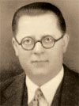
Archimandrite Theophilact
1911 – 1921
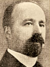
Protopriest David Nikoff
1921 – 1923
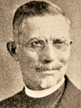
Protopriest Velik Karadzhoff
1923 – 1925
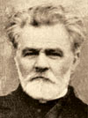
Protopriest Sotir Nikoloff
1927 – 1931
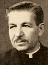
Protopriest Haralampi Ilief
1931–1937 & 1941–1964
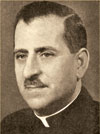
Protopriest Vasil Mihailoff
1938 – 1940
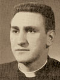
Protopriest Jordan Dimoff
1956 – 1963
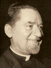
Protopriest Simeon Dimitroff
1965 – 1973
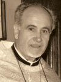
Protopriest Dimitar Popov
1974 – 1986
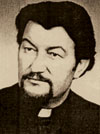
Protopriest Ivan Minchev
1986 – 1999
Protopriest Valeri Shumarov
1999 – 2012
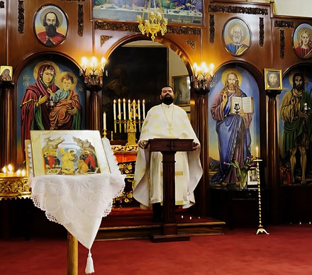
Father Ioannis Ivanov
2023 – Present
Current Parish Priest
Historical Choir Directors
Benyo Benev
1927
Founded the first church choir with over 30 volunteer choristers.
V. Mihailichenko
1948 – 1964
Led the choir through the post-war period and transition to the new Sackville Street church.
M. Milushev
1966 – 1971
Expanded the choir's repertoire during the community's flourishing in the 1960s.
N. Nanev
1971 – 1975
Continued the tradition of excellence in Orthodox sacred music.
S. Marchev
1976 – 1985
Served for nearly a decade, developing the choir as a cornerstone of parish worship.
Svetlina Vasilkova
April 2017 – Present
Graduate of Pleven Music School and Plovdiv Music Academy. Current director since April 2017.